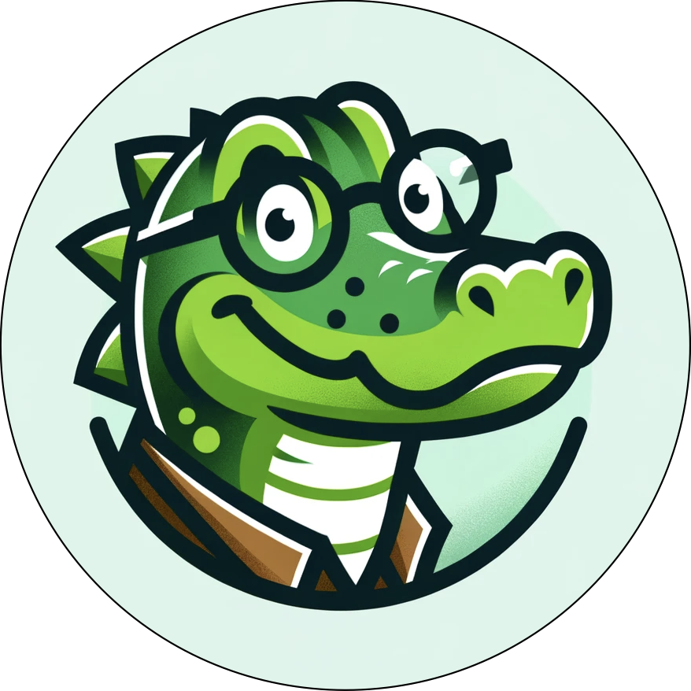

I specialize in developing AI-powered educational tools that personalize learning experiences, making quality education accessible to all learners. I am a CS master's graduate from Johns Hopkins University, where my research focused on leveraging Informational Retrieval and Generative AI for personalized education systems. Prior to this, I studied Linguistics and English at UC Berkeley, where my primary interests in Theoretical Linguistics (Phonology and Semantics) and Literary Theory inspired my passion for Personalized Learning Technologies and AI for Social Good.
My goal is to empower people using AI and Education. AI has the power to enhance human capabilities, as well as personalize learning to fit individual goals and backgrounds. Meanwhile, education is a longstanding tool for empowerment, leading to knowledge and opportunity. I envision a future where together, AI and Education equip individuals with the critical thinking and technical skills to bring their visions to life and make a meaningful impact.
My Work
I currently develop conversational AI and personalized learning systems. My MS thesis turned passion project, GAITA, is an LLM RAG chatbot that creates personalized CS learning pathways from open courseware. Inspired by my own transition into this field from a nontechnical background, I started Gaita to make open-access AI education more effective and accessible by personalizing it to people's diverse backgrounds and goals.
I also served as the Technical Lead for a similar RAG system developed for the NIH’s AIM-AHEAD Data Science Training Core, in collaboration with the Johns Hopkins Center for Digital Health and AI. This tool helps users navigate data science courses while addressing disparities in medical research.
I have supported AI Education programs for both technical and non-technical audiences. While completing my Master’s program, I worked as an AI Education TA on Apple’s internal AI Education team (AIML University). In this role, I collaborated with educators and domain experts to develop NLP and ML learning materials for internal engineering, research, and annotation teams.
For a complete list of my research work, please visit my ResearchGate profile.
GAITA

A RAG chatbot that generates personalized Computer Science learning pathways from open-access educational resources, making quality education accessible to learners with nontraditional backgrounds.
Detecting Suicide Ideation with Text Classification
A machine learning project that evaluates and compares different models for detecting suicide ideation in Reddit posts. The project aims to identify at-risk individuals through text analysis and provide insights for mental health intervention. (This was my first NLP/ML project!)
On the Use of Metaphor Translation in Psychiatry
A literature review exploring the importance of metaphors in psychiatric discourse, the shortcomings of mental healthcare for people with Limited English proficiency (LEP), and emerging solutions in Machine Translation.